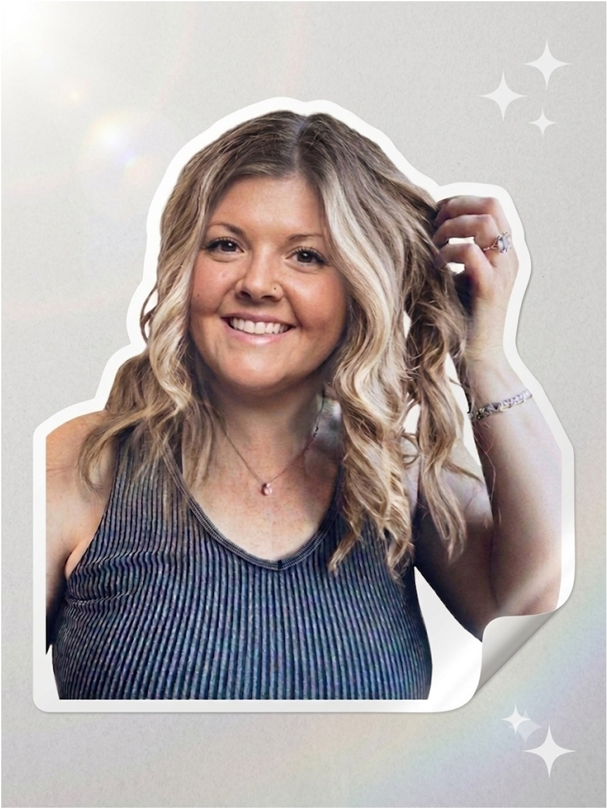

Clean, no-fluff Facebook tips for creators. One switch at a time, in the order that actually works.
Tap any step to check it off · saves on this device

Free. Anyone can turn it on. Creator-ready in three switches.
The blue Follow button and the blue verified badge are not the same. Follow is free and anyone can switch it on. Verification is a whole different process.
New Facebook creator tips drop here. Follow the page so you catch each one.